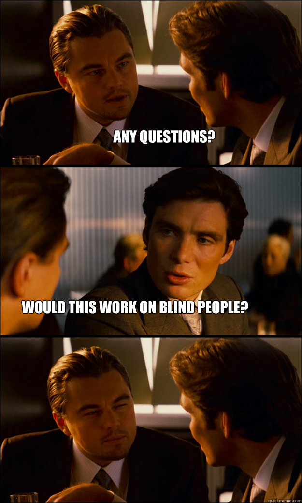

| PLS OPEN ---> | *blind people |

| WELCOME TO BLIND TEST!1!!11> |
What is the Legal Definition of Blindness?
Legal blindness occurs when a person has central visual acuity (vision that allows a person to see straight ahead of them) of 20/200 or less in his or her better eye with correction. With 20/200 visual acuity, a person can see at 20 feet, what a person with 20/20 vision sees at 200 feet.
In determining legal blindness, visual field (the part of a person's vision that enables them to see what is happening to the side of them) is also considered. A visual field of 20 degrees or less is considered to be legally blind. Eye care professionals can assist in diagnosing legal blindness.
Hard hats (and vision) required! This sight is...

|
|
VIDEO OF THE WEEK |
 pls i suffer from this |
Please hit the play button for the full effect of enjoying!
i apologize for the mess... u can listen to the sounds now. thx
AUDIO #1
MEME BREAK
|  |
AUDIO #2
 Time to LOL! YOUR MOM JOKE OF THE CENTURY
Time to LOL! YOUR MOM JOKE OF THE CENTURY
Your mom's so old that her social security number is
1
This sight was best viewed through  Internet Explorer
Internet Explorer